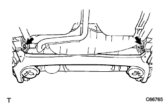
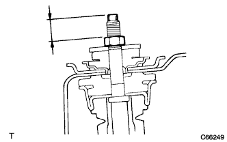
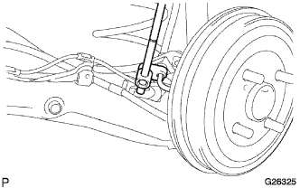
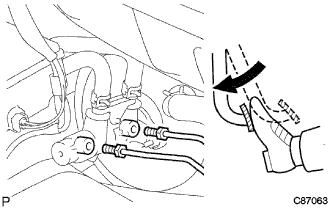
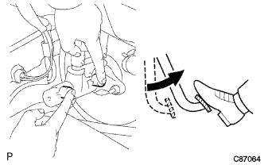

リヤアクスルビーム 取り付け |
| 1. リヤアクスルキャリヤ ブシュ LH取り付け |
新品のブシュの切り欠きとリヤアクスルビームの合わせマークを合わせて仮付けする。
SSTを使用して、ブシュをリヤアクスルビームに取り付ける。
| 2. リヤアクスルキャリヤ ブシュ RH取り付け |
| 3. リヤアクスル ビームASSY仮締め |
|  |
ボルト2本で、リヤアクスルビームを仮付けする。
| 4. コイル スプリング RR LH取り付け |
リヤコイルスプリングインシュレータLWR LHをアクスルビームASSYに取り付ける。
コイルスプリングLHのアッパ側端面とリヤコイルスプリングインシュレータUPR LHのストッパ部を合わせて取り付ける。
 |
識別ペイントを車両下側および車両後方にして、リヤコイルスプリングLHをリヤアクスルビームASSYに取り付ける。
| 5. コイル スプリング RR RH取り付け |
| 6. ショック アブソーバASSY RR LH仮締め |
 |
木片を介してリヤアクスルビームASSYをジャッキで支持する。
ジャッキを徐々に上げ、ショックアブソーバASSY LH(ロワー側)をリヤアクスルビームASSYに取り付け、リヤショックアブソーバスペーサを介してナットで仮締めする。
|  |
リヤショックアブソーバASSY LHの二面幅を固定して、新品のナットを基準値まで締め付ける。
リヤショックアブソーバASSY LHの二面幅を固定して、新品のロックナットを締め付ける。
| 7. ショック アブソーバASSY RR RH仮締め |
| 8. リヤアクスル ハブ ＆ ベアリングASSY LH取り付け |
リヤブレーキASSYをリヤアクスルビームに取り付ける。
 |
ボルト4本で、リヤアクスルハブ&ベアリングASSY LHをリヤアクスルビームに取り付ける。
 |
ナットで、パーキングブレーキケーブルASSY No.3をリヤアクスルビームに取り付ける。
| 9. リヤアクスル ハブ ＆ ベアリングASSY RH取り付け |
| 10. リヤブレーキ ドラム取り付け |
| 11. ブレーキドラムとライニングのすき間調整 |
 |
バッキングプレートのサービスホールからマイナスドライバーでアジャスターを回して拡張させ、ブレーキシューASSYをリヤブレーキドラムに接触させる。
 |
マイナスドライバーでリヤブレーキオートマチックアジャストレバーLHを押しながらもう1本のマイナスドライバーでアジャスターを回して収縮させる。
ブレーキシューASSYがリヤブレーキドラムに接触しなくなった状態から更にアジャスターを1/2回転させて収縮させる。
| 12. フレキシブルホース ブラケット NO.4取り付け |
 |
ボルトでフレキシブルホースブラケットをリヤアクスルビームに取り付ける。
| 13. フレキシブルホース ブラケット NO.3取り付け |
| 14. リヤブレーキ チューブ NO.4接続 |
|  |
ユニオンナットレンチを使用して、ブレーキチユーブNo.4を取り付ける。
クリップを取り付ける。
| 15. リヤブレーキ チューブ NO.3接続 |
| 16. スキッドコントロール センサ ワイヤ接続 |
スキッドコントロールセンサのコネクタを取り付ける。
| 17. 車両落ち着かせ |
リヤタイヤを取り付ける。
車両をジャッキダウンして数回上下に揺すり、リヤサスペンションを落ち着かせる。
| 18. リヤアクスル ビームASSY本締め |
車両を落ち着かせる。
木片を介して、ショックアブソーバが参考値になるまでリヤアクスルビームをジャッキアップし、取り付けボルトを本締めする。
| 19. ショック アブソーバASSY RR LH本締め |
ショックアブソーバASSY LH(ロワー側)のナットを本締めする。
| 20. ショック アブソーバASSY RR RH本締め |
| 21. リヤアブソーバ キャップ取り付け |
| 22. ブレーキ系統エア抜き |
ブレーキフルード補充
 |
ブレーキフルードの缶をリザーバの上に逆さにして立てる。
マスタシリンダエア抜き
ユニオンナットレンチ10を使用して、ブレーキチューブ2本をブレーキマスタシリンダASSYから切り離す。
|  |
ゆっくりとブレーキペダルを踏み込み、その状態を保持する。
|  |
指でチューブ穴をふさぎ、ブレーキペダルを放す。
指を放してゆっくりとブレーキペダルを踏み込んで保持し、再びチューブ穴をふさいでブレーキペダルを放し、これを3、4回繰り返す。
ユニオンナットレンチ10を使用して、ブレーキチューブ2本をブレーキマスタシリンダASSYに接続する。
ブレーキ系統エア抜き
ビニールチューブをブリーダプラグに接続する。
ブレーキペダルを数回踏み込んで、ブレーキペダルを踏んだままブリーダプラグをゆるめる。
ブレーキフルードが出てこなくなった時点で、ブリーダプラグを締め付け、ブレーキペダルをはなす。
ブレーキフルード中のエアの混入がなくなるまで繰り返す。
同様にして、各ホイールのブレーキラインからエアを抜く。
ブレーキフルード量点検
ブレーキフルード量を確認し、必要であればリザーバのMAXの位置までブレーキフルードを補充する。
| 23. リヤホイールアライメント点検 |
参照)| 24. テストモード点検(スピードセンサ系統) |
参照)